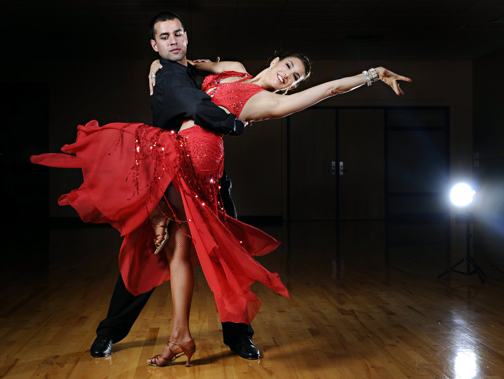

Um pouco sobre mim...
Meu nome é Daniel Ruckert da Gama, tenho 17 anos e estudo no Colégio Módulo, atualmente cursando o 3° ano do Ensino Médio.
Faço amizades com muita facilidade, também costumo ser muito gentil e alegre.
Adoro esportes como basquete, vôlei e queimada mas o meu favorito é dança, uma qualidade que descobri recentemente.
A minha matéria favorita é biologia, fico fascinado principalmente com a parte da anatomia.
Posso ser muito perfeccionista e rígido as vezes, mas sempre tento manter um clima agradável entre amigos.
Meus sonhos
É normal quando criança sonhar ou imaginar coisas impossíveis de se obter mas comigo foi diferente.
Desde pequeno sempre tive foco em meus objetivos, mantendo sonhos reais que eu poderia conquistar.
Meu primeiro sonho era ter uma casa própria, já que minha família sempre morou de aluguel.
Outro dos meus sonhos era o de ter um computador, sempre gostei de ver jogos no Youtube mas nunca tive a oportunidade de jogar.
E por último e não menos importante, criar minha família com minha esposa e filhos, tendo casa própria e vivendo bem.
Meu Atual Trabalho
Atualmente estou empregado em um Clube de Campo como menor aprendiz e estou gostando muito do trabalho.
Trabalho no setor do almoxarifado mas já estou sendo promovido para o setor de compras no mês que vem.
No meu setor eu tenho a função de cuidar do estoque das mercadorias que o Clube possui, fazendo inventário, transporte e retirada de materiáis e auxiliando outros setores quando necessário.
Meu atual emprego é muito bom e fico feliz com a promoção, já que poderei aprender sobre outra área, aumentando minha experiência em trabalho.
Não pretendo seguir carreira no Clube de Campo, porém o futuro muda constantemente e dependendo da situação pode até ser uma opção.
Meu Futuro
Desde pequeno sempre fui muito ansioso, daqueles que não conseguia dormir pensando no que iria trabalhar no futuro.
Mesmo pensando constantemente no futuro, nunca cheguei uma conclusão no que eu gostaria de trabalhar, já que tinha diversas áreas onde eu via coisas interessantes.
Já tive interesse em ser soldado, biólogo marinho, veterinário, bombeiro, médico e técnico em informática, sempre procurando assuntos e tópicos nessa área.
Atualmente eu só mantenho o interesse em computadores e animais mas como profissão pretendo seguir na área da medicina.
No futuro eu me vejo como um médico, independente se estiver cuidando de animais ou pessoas.
Meus Hobbies
No meu tempo livre costumo tocar violão, algo que eu gosto muito e pratico faz tempo.
Eu comecei a tocar quando tinha 8 anos, junto com teclado e flauta mas fiquei muito tempo sem tocar em um instrumento, voltando a utilizar o violão recentemente.
Além disso, gosto de jogar sempre que possível, desde pequeno tive consoles como ps2 e fui atualizando até o PS4. Recentemente comprei um computador aonde fico boa parte do meu tempo livre.
Para entrar em uma faculdade pública de medicina é necessário muito estudo e disciplina, então separo um tempo do meu dia para estudar.
Também gosto de passar um tempo com a minha família e a minha namorada, assistindo filmes, séries ou saindo para algum lugar.